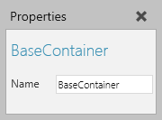
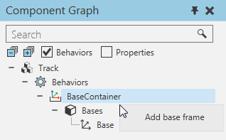

A Base Container is a container of Frame features used as base frames.

Frames in a Base Container are listed with the behavior in the Component Graph panel and managed using a Bases element.

| Name | Description |
| Name | Defines the name of the container. |
A Frame feature used as a base frame or robot coordinate system has its own set of properties related to robotics.
| Name | Description |
| Name | Defines the name of the base frame. |
| Transform | Defines an expression for transforming the base frame, for example its position. |
| Node | Defines the node the base frame is attached to in 3D world. Generally, this is the Robot World Frame of a robot. In other cases, this might be a node in another component such as a pallet or conveyor, or NULL meaning the frame refers to the node of its container. |
| InterpolationMode | Defines how the base frame is used when interpolating robot positions. Generally, a base frame is used as a robot coordinate system for simplifying robot positions. However, the base frame can act like a tool frame or tool center point(TPC). One example is a stationary TCP where a robot moves around in 3D world. In that example, you might want a robot position to inherit the orientation of the tool frame or base frame. |